Quartz is a hard, crystalline mineral composed of silica (silicon dioxide). The atoms are linked in a continuous framework of SiO4 silicon-oxygen tetrahedra, with each oxygen being shared between two tetrahedra, giving an overall chemical formula of SiO2. Quartz is the second most abundant mineral in Earth's continental crust, behind feldspar.[9]
Quartz exists in two forms, the normal α-quartz and the high-temperature β-quartz, both of which are chiral. The transformation from α-quartz to β-quartz takes place abruptly at 573 °C (846 K; 1,063 °F). Since the transformation is accompanied by a significant change in volume, it can easily induce fracturing of ceramics or rocks passing through this temperature threshold.
There are many different varieties of quartz, several of which are semi-precious gemstones. Since antiquity, varieties of quartz have been the most commonly used minerals in the making of jewelry and hardstone carvings, especially in Eurasia.
Quartz is the mineral defining the value of 7 on the Mohs scale of hardness, a qualitative scratch method for determining the hardness of a material to abrasion.
ETYMOLOGY
The word "quartz" is derived from the German word "Quarz", which had the same form in the first half of the 14th century in Middle High German and in East Central German[10] and which came from the Polish dialect term kwardy, which corresponds to the Czech term tvrdý ("hard").[11]
The Ancient Greeks referred to quartz as κρύσταλλος (krustallos) derived from the Ancient Greek κρύος (kruos) meaning "icy cold", because some philosophers (including Theophrastus) apparently believed the mineral to be a form of supercooled ice.[12] Today, the term rock crystal is sometimes used as an alternative name for transparent coarsely crystalline quartz.[13][14]
CRYSTAL HABIT AND STRUCTURE
Quartz belongs to the trigonal crystal system. The ideal crystal shape is a six-sided prism terminating with six-sided pyramids at each end. In nature quartz crystals are often twinned (with twin right-handed and left-handed quartz crystals), distorted, or so intergrown with adjacent crystals of quartz or other minerals as to only show part of this shape, or to lack obvious crystal faces altogether and appear massive.[15][16] Well-formed crystals typically form as a druse (a layer of crystals lining a void), of which quartz geodes are particularly fine examples.[17] The crystals are attached at one end to the enclosing rock, and only one termination pyramid is present. However, doubly terminated crystals do occur where they develop freely without attachment, for instance, within gypsum.[18]
α-quartz crystallizes in the trigonal crystal system, space group P3121 or P3221 depending on the chirality. β-quartz belongs to the hexagonal system, space group P6222 and P6422, respectively.[19] These space groups are truly chiral (they each belong to the 11 enantiomorphous pairs). Both α-quartz and β-quartz are examples of chiral crystal structures composed of achiral building blocks (SiO4 tetrahedra in the present case). The transformation between α- and β-quartz only involves a comparatively minor rotation of the tetrahedra with respect to one another, without a change in the way they are linked.[15][20]
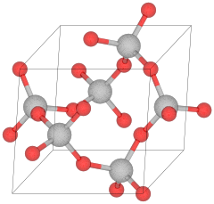
Crystal structure of α-quartz
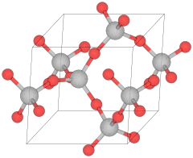
Crystal structure of β-quartz
VARIETIES (COLOR)
Pure quartz, traditionally called rock crystal or clear quartz, is colorless and transparent or translucent, and has often been used for hardstone carvings, such as the Lothair Crystal. Common colored varieties include citrine, rose quartz, amethyst, smoky quartz, milky quartz, and others.[22] These color differentiations arise from the presence of impurities which change the molecular orbitals, causing some electronic transitions to take place in the visible spectrum causing colors.
The most important distinction between types of quartz is that of macrocrystalline (individual crystals visible to the unaided eye) and the microcrystalline or cryptocrystalline varieties (aggregates of crystals visible only under high magnification). The cryptocrystalline varieties are either translucent or mostly opaque, while the transparent varieties tend to be macrocrystalline. Chalcedony is a cryptocrystalline form of silica consisting of fine intergrowths of both quartz, and its monoclinic polymorphmoganite.[23] Other opaque gemstone varieties of quartz, or mixed rocks including quartz, often including contrasting bands or patterns of color, are agate, carnelian or sard, onyx, heliotrope, and jasper.[15]
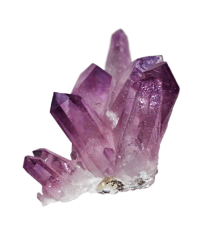
Amethyst
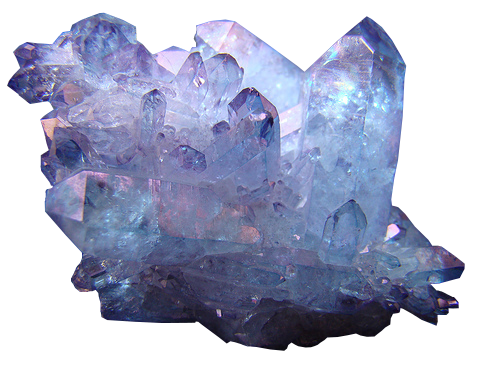
Blue Quartz
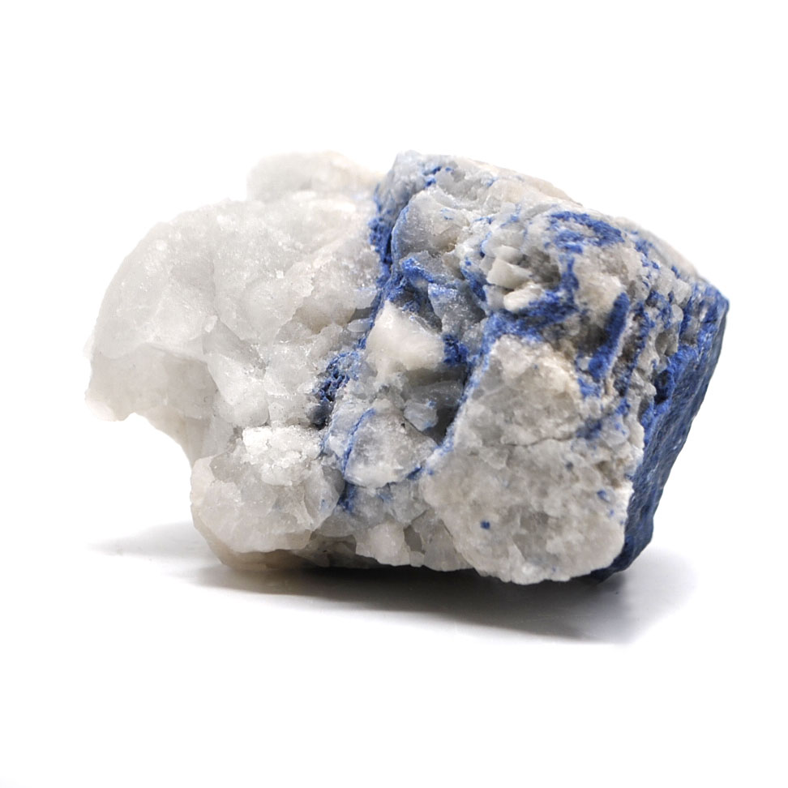
Dumortierite Quartz
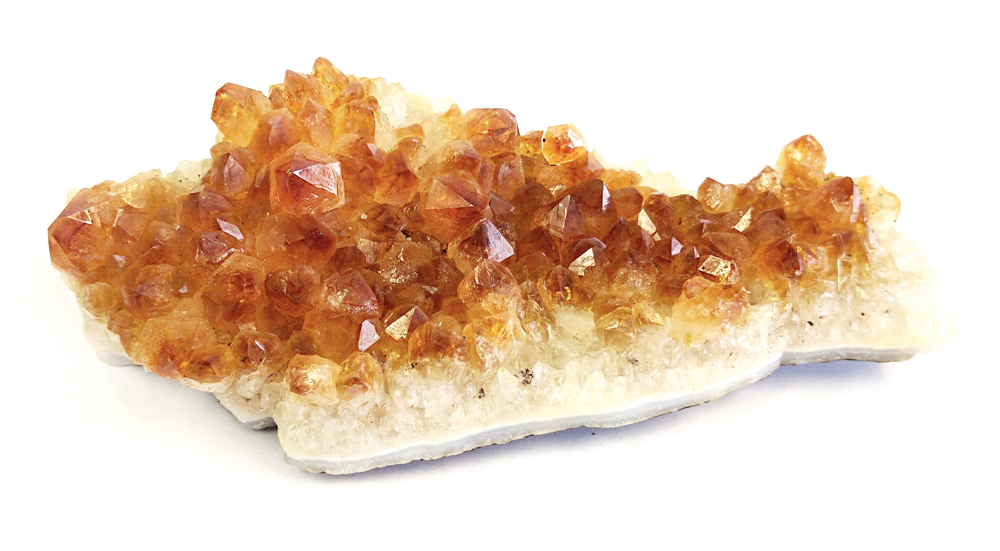
Citrine
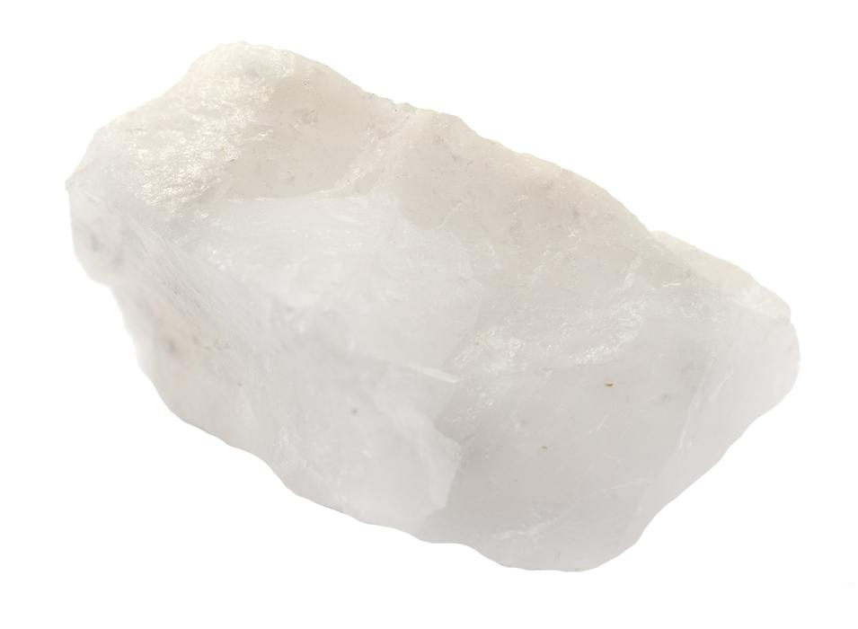
Milky Quartz
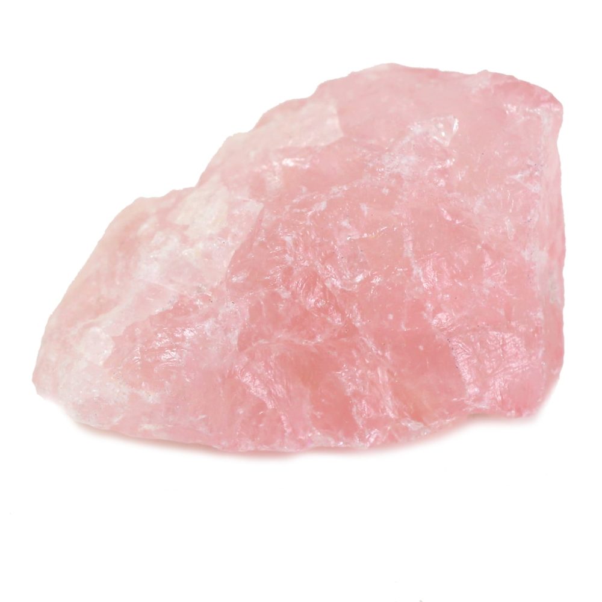
Rose Quartz
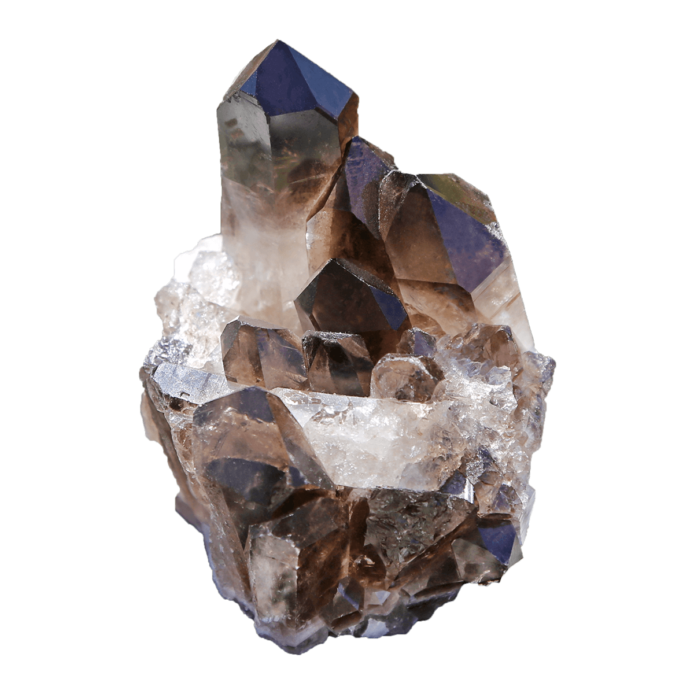
Smoky Quartz
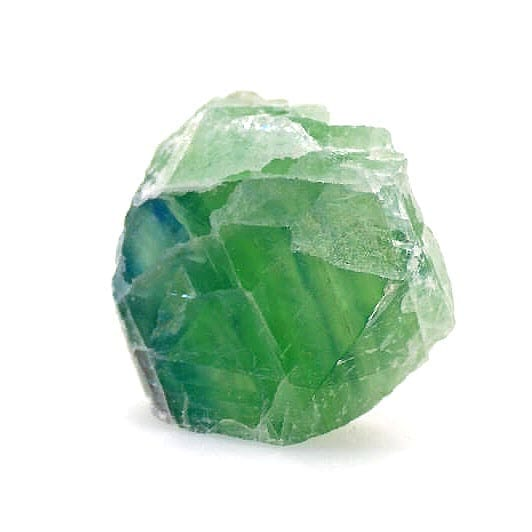
Prasiolite
Amethyst
Amethyst is a form of quartz that ranges from a bright vivid violet to dark or dull lavender shade. The world's largest deposits of amethysts can be found in Brazil, Mexico, Uruguay, Russia, France, Namibia and Morocco. Sometimes amethyst and citrine are found growing in the same crystal. It is then referred to as ametrine. An amethyst derives its color from traces of iron in its structure.[24]
Blue Quartz
Blue quartz contains inclusions of fibrous magnesio-riebeckite or crocidolite.[25]
Dumortierite quartz
Inclusions of the mineral dumortierite within quartz pieces often result in silky-appearing splotches with a blue hue. Shades of purple or grey sometimes also are present. "Dumortierite quartz" (sometimes called "blue quartz") will sometimes feature contrasting light and dark color zones across the material.[26][27] "Blue quartz" is a minor gemstone.[26][28]
Citrine
Citrine is a variety of quartz whose color ranges from a pale yellow to brown due to a submicroscopic distribution of colloidal ferric hydroxide impurities.[29] Natural citrines are rare; most commercial citrines are heat-treated amethysts or smoky quartzes. However, a heat-treated amethyst will have small lines in the crystal, as opposed to a natural citrine's cloudy or smoky appearance. It is nearly impossible to differentiate between cut citrine and yellow topaz visually, but they differ in hardness. Brazil is the leading producer of citrine, with much of its production coming from the state of Rio Grande do Sul. The name is derived from the Latin word citrina which means "yellow" and is also the origin of the word "citron". Sometimes citrine and amethyst can be found together in the same crystal, which is then referred to as ametrine.[30] Citrine has been referred to as the "merchant's stone" or "money stone", due to a superstition that it would bring prosperity.[31]
Milky quartz
Milk quartz or milky quartz is the most common variety of crystalline quartz. The white color is caused by minute fluid inclusions of gas, liquid, or both, trapped during crystal formation,[33] making it of little value for optical and quality gemstone applications.[34]
Rose quartz
Rose quartz is a type of quartz which exhibits a pale pink to rose red hue. The color is usually considered as due to trace amounts of titanium, iron, or manganese, in the material. Some rose quartz contains microscopic rutile needles which produces an asterism in transmitted light. Recent X-ray diffraction studies suggest that the color is due to thin microscopic fibers of possibly dumortierite within the quartz.[35]
Smoky quartz
Smoky quartz is a gray, translucent version of quartz. It ranges in clarity from almost complete transparency to a brownish-gray crystal that is almost opaque. Some can also be black. The translucency results from natural irradiation acting on minute traces of aluminum in the crystal structure.[37]
Prasiolite
Not to be confused with Praseolite. Prasiolite, also known as vermarine, is a variety of quartz that is green in color. Since 1950, almost all natural prasiolite has come from a small Brazilian mine, but it is also seen in Lower Silesia in Poland. Naturally occurring prasiolite is also found in the Thunder Bay area of Canada. It is a rare mineral in nature; most green quartz is heat-treated amethyst.[38]
SYNTHETIC AND ARTIFICIAL TREATMENTS
Not all varieties of quartz are naturally occurring. Some clear quartz crystals can be treated using heat or gamma-irradiation to induce color where it would not otherwise have occurred naturally. Susceptibility to such treatments depends on the location from which the quartz was mined.[39]
Prasiolite, an olive colored material, is produced by heat treatment;[40] natural prasiolite has also been observed in Lower Silesia in Poland.[41] Although citrine occurs naturally, the majority is the result of heat-treating amethyst or smoky quartz.[40] Carnelian has been heat-treated to deepen its color since prehistoric times.[42]
Because natural quartz is often twinned, synthetic quartz is produced for use in industry. Large, flawless, single crystals are synthesized in an autoclave via the hydrothermal process.[43][15][44]
Like other crystals, quartz may be coated with metal vapors to give it an attractive sheen.[45][46]
OCCURENCE
Quartz is a defining constituent of granite and other felsic igneous rocks. It is very common in sedimentary rocks such as sandstone and shale. It is a common constituent of schist, gneiss, quartzite and other metamorphic rocks.[15] Quartz has the lowest potential for weathering in the Goldich dissolution series and consequently it is very common as a residual mineral in stream sediments and residual soils. Generally a high presence of quartz suggests a "mature" rock, since it indicates the rock has been heavily reworked and quartz was the primary mineral that endured heavy weathering.[47]
While the majority of quartz crystallizes from molten magma, quartz also chemically precipitates from hot hydrothermal veins as gangue, sometimes with ore minerals like gold, silver and copper. Large crystals of quartz are found in magmatic pegmatites.[15] Well-formed crystals may reach several meters in length and weigh hundreds of kilograms.[48]
Naturally occurring quartz crystals of extremely high purity, necessary for the crucibles and other equipment used for growing silicon wafers in the semiconductor industry, are expensive and rare. A major mining location for high purity quartz is the Spruce Pine Gem Mine in Spruce Pine, North Carolina, United States.[49] Quartz may also be found in Caldoveiro Peak, in Asturias, Spain.[50]
The largest documented single crystal of quartz was found near Itapore, Goiaz, Brazil; it measured approximately 6.1×1.5×1.5 m and weighed 39,916 kilograms.[51]
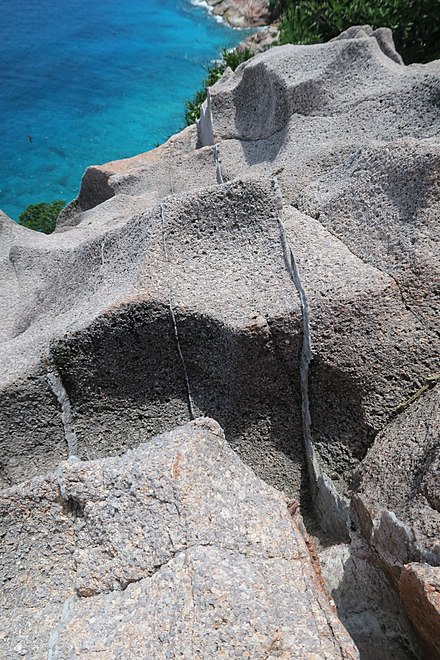
The thin brighter layers are quartz veins, formed during the late stages of crystallization of granitic magmas.
MINING
Quartz is extracted from open pit mines. Miners occasionally use explosives to expose deep pockets of quartz. More frequently, bulldozers and backhoes are used to remove soil and clay and expose quartz veins, which are then worked using hand tools. Care must be taken to avoid sudden temperature changes that may damage the crystals.[52][53]
Almost all the industrial demand for quartz crystal (used primarily in electronics) is met with synthetic quartz produced by the hydrothermal process. However, synthetic crystals are less prized for use as gemstones.[54] The popularity of crystal healing has increased the demand for natural quartz crystals, which are now often mined in developing countries using primitive mining methods, sometimes involving child labor.[55]
RELATED SILICA MINERALS
Quartz is extracted from open pit mines. Miners occasionally use explosives to expose deep pockets of quartz. More frequently, bulldozers and backhoes are used to remove soil and clay and expose quartz veins, which are then worked using hand tools. Care must be taken to avoid sudden temperature changes that may damage the crystals.[52][53]
Almost all the industrial demand for quartz crystal (used primarily in electronics) is met with synthetic quartz produced by the hydrothermal process. However, synthetic crystals are less prized for use as gemstones.[54] The popularity of crystal healing has increased the demand for natural quartz crystals, which are now often mined in developing countries using primitive mining methods, sometimes involving child labor.[55]